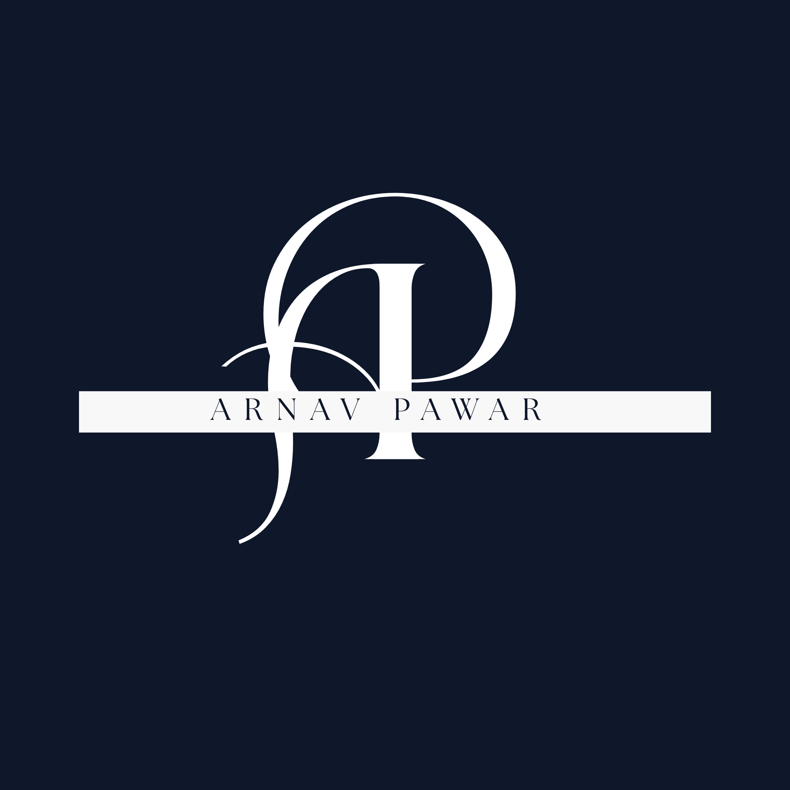

01 / FEATURED
ColorSpeak
A colour palette generator that lets users explore and save colour combinations. This project helped me learn frontend interactions, backend integration and deployment.
Explore ColorSpeak →
ArnavMY WORK
A collection of applications I've built and learning projects I've worked on while growing as a developer.
| Title | Tech Used | Description | Link |
|---|---|---|---|
| ColorSpeak | HTML, CSS, JavaScript, Django | A colour palette generator with saved palettes and theme options. | Live Site |
| FreeQuill | Python, Django, HTML, CSS | A writing-focused web application exploring text editing features. | Live Site |
| QRzen | Python, Django, QR code library | A QR code generator built as a web development project. | Live Site |
| SpeakxValidator | HTML, CSS, JavaScript | A learning project focused on Video Submission validation. | Live Site |
SELECTED WORK
01 / FEATURED
A colour palette generator that lets users explore and save colour combinations. This project helped me learn frontend interactions, backend integration and deployment.
Explore ColorSpeak →02 / FEATURED
A writing-focused web application built to explore useful text tools and full-stack development with Python and Django.
Explore FreeQuill →